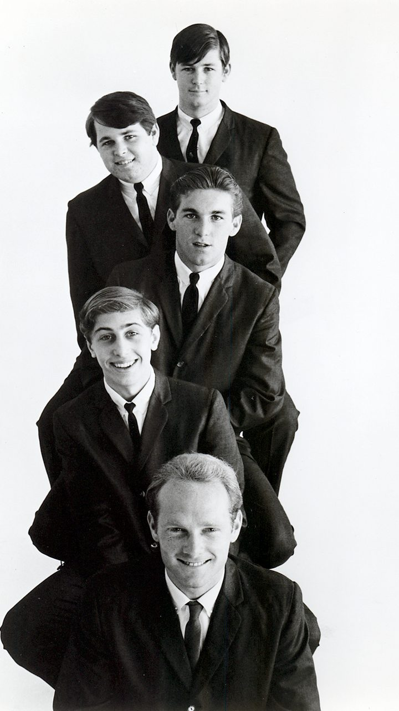

Surfin' Safari by The Beach Boys is the 1962 single that helped turn a Southern California family band into a national act.
Capitol released it on June 4, 1962, and it climbed to No. 14 on the Billboard Hot 100.
It sold well enough to earn a Gold certification.

Table of Contents
The Story Behind the Song
Brian Wilson and Mike Love share the writing credit.
Wilson later described it as "a silly song with a simple-but-cool" chord pattern.
He came up with it while trying to play the piano the way Chuck Berry played his guitar.
The song borrows another Berry habit too, which is rattling off place names.
Where the Surf Talk Came From
The lyrics name beaches such as Malibu, Rincon and Huntington.
Surfer Jimmy Bowles supplied much of the local vocabulary.
He was the brother of Judy Bowles, whom Brian had recently met.
The words gave the song a credibility the band mostly lived through its records.
A First Try at World Pacific
The group first cut the song at World Pacific Studios on February 8, 1962.
Hite and Dorinda Morgan produced that session, and Al Jardine took part before leaving the group for a time.
That early take is not the hit.
Recording and Signing with Capitol
The released version was cut at Western Recorders in Hollywood in April 1962.
The date often given is April 19, but no paperwork for it has turned up.
Murry Wilson, the band's father and manager, took the masters to Capitol A&R man Nick Venet.
Capitol bought "Surfin' Safari," "409" and "Lonely Sea" in May, then signed the band in July.
Who Played on the Single
- Mike Love, lead and backing vocals
- Brian Wilson, backing vocals and bass guitar
- Carl Wilson, backing vocals and lead guitar
- David Marks, backing vocals and rhythm guitar
- Dennis Wilson, backing vocals and drums
Which Side Was the A-Side?
Murry Wilson later claimed Venet preferred "409" as the A-side.
Venet disputed that, and Capitol's original work order lists Surfin' Safari as the A-side.
"409" went on to reach No. 76 on the Hot 100 as the flip.
It also shows off the layered harmonies the group became known for.
Chart Success and Legacy
Billboard reviewed the single on June 9, 1962, with four stars and "strong sales potential."
It topped local surveys in Los Angeles, San Diego, Dallas, Minneapolis, Buffalo and Hartford.
Nationally it peaked at No. 14 on Billboard, No. 10 on Cash Box and No. 5 on UPI's survey.
The parent album, Surfin' Safari, followed on October 1, 1962, and reached No. 32 on the Top LPs chart.
A bigger surf hit came a year later with Surfin USA.
By 1964 the band had moved on to cars and freedom with Fun, Fun, Fun.
| Country / chart | Result |
|---|---|
| United States, Billboard Hot 100 | No. 14 |
| United States, Cash Box | No. 10 |
| United States, UPI survey | No. 5 |
| Australia, Music Maker | No. 7 |
| Sweden, Kvällstoppen and Tio i Topp | No. 1 |
| United Kingdom | Did not chart |
| United States, RIAA certification | Gold |
Abroad and in Cover Versions
Capitol issued the single in the UK in October 1962, and it made no impact on the charts.
Elsewhere it did better, peaking at No. 7 in Australia and spending three weeks at No. 1 in Sweden.
Jan & Dean recorded it in 1963.
The Ramones covered it on their 1993 album Acid Eaters, and Mike Love re-recorded it in 2019.
FAQ
Who wrote Surfin' Safari?
Brian Wilson and Mike Love wrote the song.
Surfer Jimmy Bowles supplied some of the surfing terms and place names.
When was Surfin' Safari released?
Capitol released the single on June 4, 1962, backed with "409."
The album Surfin' Safari followed on October 1, 1962.
How high did Surfin' Safari chart?
It reached No. 14 on the Billboard Hot 100 and No. 10 on Cash Box.
It failed to chart in the United Kingdom.
Who sang lead on Surfin' Safari?
Mike Love sang lead.
Brian, Carl and Dennis Wilson sang backing vocals, with David Marks also in the group on the recording.
Was Surfin' Safari the first Beach Boys single?
No.
The band's first single was "Surfin'," released on the Candix label in 1961.
Surfin' Safari was their first single on Capitol.
A borrowed Chuck Berry idea and a list of beach names gave a Southern California family band its first real hit.
Read more about the band's full run of hits on the The Beach Boys biography page.
Explore the wider scene on the Garage & Surf Rock genre hub.
Wikipedia's entry on the song covers its recording and chart history in more depth.
Sixty years on, Surfin' Safari by The Beach Boys still sounds like the start of summer.
Back to the 1960smusic.net homepage to explore every genre of the decade.